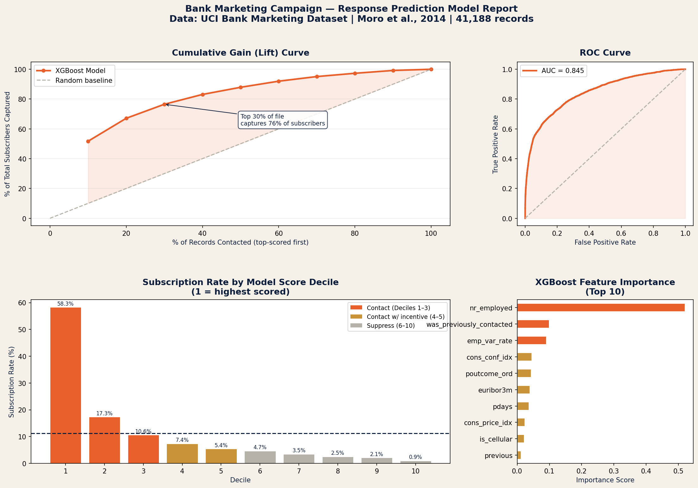

02: Exploratory Analysis
What the SQL Turned Up
Before touching any model, I loaded the CSV into SQLite and ran a series of GROUP BY queries to understand which segments actually convert. A few things jumped out immediately.
Customers who previously subscribed are far more likely to convert again (65.11%) compared to first-time contacts (9.26%), making prior campaign success the strongest predictor of future response.
SQL — GROUP BY poutcome and pdays=999 vs pdays≠999
Subscription Rate by Job
Students (31.43%) and retirees (25.23%) convert at roughly 2-3x the overall average.
Blue-collar workers at 6.89% sit well below the 11.27% baseline.
Subscription Rate by Age Band
The oldest group (65+) subscribes at 47.21%, which is more than four times the baseline. This is a small
segment at n=663. The 35-54 range is where most contacts land but both age bands sit at 8.65%.
Seasonality: Response Rate by Month
This dataset does not have data from Janurary or February! March (50.55%), December (48.90%) and September (44.91%) are peak months by a wide margin. May is
interesting because it is the busiest month by volume (n=13,769) but the worst performer at 6.43%, being at the bottom.
This shows there are a lot of calls for very few sign-ups!
Effect of Prior Campaign Outcome
If the client said yes last time, they say yes again at 65.11% (n=1,373). Even with a prior failure (14.23%)
beats first-time contacts (8.83%) by nearly 2 times. This is important for making analysis based on the history.
Contact Channel: Cellular vs Telephone
Cellular reaches a 14.74% rate vs. 5.23% on telephone, which is nearly 3x better.
Diminishing Returns: Contact Frequency
Response drops from 13.04% at the first contact down to 5.49% for clients reached 6+ times.
Past three contacts you are spending money on people who have already made up their mind.
Macroeconomic Signal: Euribor Rate by Subscription Outcome
Clients who subscribed were contacted during periods when the Euribor 3-month
rate averaged just 2.12%, compared to 3.81% for non-subscribers. When borrowing is cheap, term deposits
become relatively more attractive. Therefore, economic timing turns out to be a stronger predictor than most
demographic variables. This also explains why nr.employed dominates the XGBoost model!
03: Pipeline
How the Project Was Built
The workflow follows a standard database marketing process where I load and validate in SQL, engineer features,
train and compare models, score the file, and translate results to find trends.
01
CSV → SQLite
Load bank-additional-full.csv (41,188 rows), rename reserved-word columns, verify the record counts.
02
Quality Control in SQL
Check for header-row contamination, confirm class split matches documentation, count unknowns per field. This is for data preprocessing.
03
Feature Engineering
SQL CREATE VIEW: CASE WHEN age bands, education ordinals, binary flags, this is fed straight into Python via read_sql.
04
Model Training
5-fold stratified CV across Logistic Regression, Random Forest, XGBoost.
05
Score & Report
Score all 41,188 records, build the decile lift table, publish the Tableau dashboard that was created from the prep_for_tableau.csv dataset I made, write up the ROI case.
# Load the dataset
df = pd.read_csv(r'bank-additional\bank-additional-full.csv', sep=';')
# len(df) = 41,188 | (df['y']=='yes').mean() = 0.1127
conn = sqlite3.connect('bank_marketing.db')
df.to_sql('bank_marketing', conn, if_exists='replace', index=False)
# Feature engineering in SQL: keeps it reproducible and auditable
conn.execute("""CREATE VIEW model_features AS
SELECT age,
CASE WHEN age<25 THEN 0 WHEN age<35 THEN 1 WHEN age<45 THEN 2
WHEN age<55 THEN 3 WHEN age<65 THEN 4 ELSE 5 END AS age_band_ord,
CASE WHEN pdays=999 THEN 0 ELSE 1 END AS was_previously_contacted,
CASE poutcome WHEN 'failure' THEN 0
WHEN 'nonexistent' THEN 1
WHEN 'success' THEN 2 END AS poutcome_ord,
CASE WHEN contact='cellular' THEN 1 ELSE 0 END AS is_cellular,
"emp.var.rate", "cons.price.idx", "cons.conf.idx",
euribor3m, "nr.employed",
CASE WHEN y='yes' THEN 1 ELSE 0 END AS y_binary
FROM bank_marketing""")
This section prepares the dataset for analysis by loading the raw CSV into a SQLite database
and creating a structured SQL view called model_features. The goal is to make the data
clean, consistent, and ready for both analysis and modeling in a reproducible way.
The SQL view transforms raw variables into numerical formats that machine learning models can interpret. For example, age is grouped into
ordered bands, previous contact status (pdays) is converted into a binary indicator,
and campaign outcome (poutcome) is encoded as an ordinal variable. Categorical values
like contact method are also simplified into binary flags, while economic indicators such as
interest rates and employment variables are retained as numeric inputs. Finally, the target variable
(y) is converted into a binary outcome for modeling.
05: Predictive Model
Model Selection & Validation
Three models were compared using stratified 5-fold cross-validation on all 41,188 records.
I excluded duration throughout because it measures how long the call lasted, which you only know
after it ends. Including it would inflate the scores nicely but make the model useless for actually
deciding who to call in the first place, so I therefore left it out.
Logistic Regression
0.7806
5-fold CV: 0.7806 ± 0.0091
Good interpretable baseline. Worth keeping around for stakeholder explainability.
Random Forest
0.7736
5-fold CV: 0.7736 ± 0.0064
Handles the non-linear interactions well but came in slightly below logistic regression here.
Selected
XGBoost
0.8003
5-fold CV: 0.8003 ± 0.0061 · Full AUC: 0.8455
Best CV score and best decile lift which is what actually matters for campaign targeting.
Model AUC-ROC Comparison (5-Fold Stratified CV)
All three values from actual sklearn cross_val_score runs on the full dataset.
XGBoost Feature Importance (Top 8)
nr.employed importance = 0.676. The number of people employed in the economy dominates
everything else. When the labour market contracts, clients seem more inclined to put money somewhere
safe. I can now understand that economic timing matters more than demographics.
Full Model Report: Generated from Python (sklearn + XGBoost)
Top-left: Cumulative Gain Curve
The cumulative gain curve shows that contacting the top 30% of the scored file captures 76% of all subscribers.
Top-right: ROC Curve
The ROC curve confirms an AUC of 0.845 on the held-out test set.
Bottom-left: Decile Performance
Subscription rate by model score decile shows strong separation, where decile 1 reaches 58.3%, representing a 5.1× lift over the 11.27% baseline.
Bottom-right: Feature Importance
XGBoost feature importance highlights that nr_employed alone accounts for over half of the model’s explanatory power.
